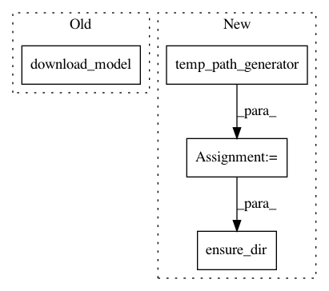

60684cf9a2ff4fa92cf0424a13790896ce0a29fe,autokeras/pretrained/face_detector.py,FaceDetector,load,#FaceDetector#Any#,311
Before Change
self.scale_factor = 0.709
def load(self, model_path=None):
model_paths = [download_model(model_link, file_name) for model_link, file_name in zip(
Constant.FACE_DETECTOR["MODEL_LINKS"], Constant.FACE_DETECTOR["MODEL_NAMES"])]
return model_paths
After Change
self.scale_factor = 0.709
def load(self, model_path=None):
temp_path = temp_path_generator()
ensure_dir(temp_path)
model_paths = [f"{temp_path}/{file_name}" for file_name in Constant.FACE_DETECTOR["MODEL_NAMES"]]
for google_id, file_name in zip(Constant.FACE_DETECTOR["MODEL_GOOGLE_ID"],
Constant.FACE_DETECTOR["MODEL_NAMES"]):
download_file_from_google_drive(file_id=google_id, dest_path=f"{temp_path}/{file_name}")
In pattern: SUPERPATTERN
Frequency: 4
Non-data size: 4
Instances
Project Name: keras-team/autokeras
Commit Name: 60684cf9a2ff4fa92cf0424a13790896ce0a29fe
Time: 2019-01-28
Author: boyuangong@gmail.com
File Name: autokeras/pretrained/face_detector.py
Class Name: FaceDetector
Method Name: load
Project Name: jhfjhfj1/autokeras
Commit Name: 60684cf9a2ff4fa92cf0424a13790896ce0a29fe
Time: 2019-01-28
Author: boyuangong@gmail.com
File Name: autokeras/pretrained/object_detector.py
Class Name: ObjectDetector
Method Name: load